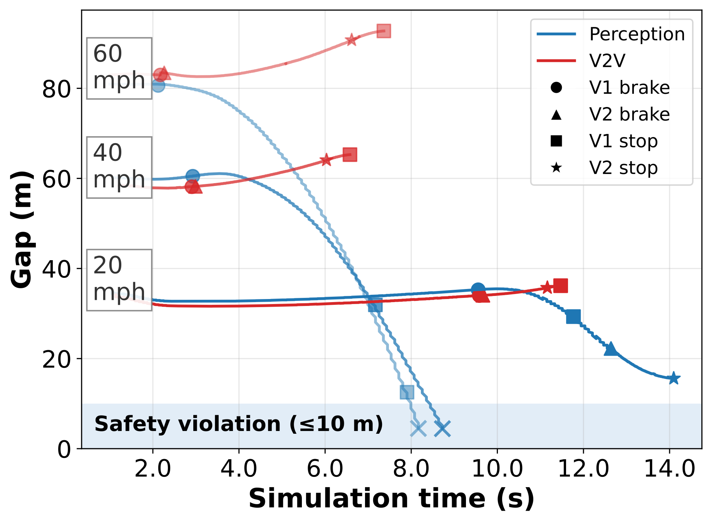
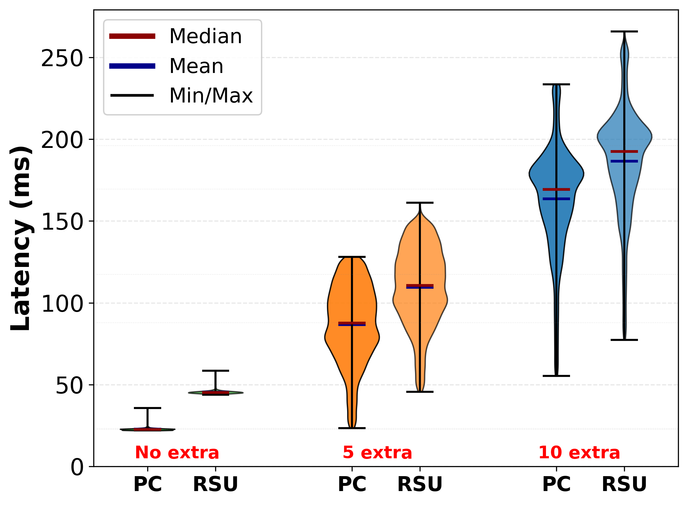

Tutorial 7: V2V and V2I Experiments¶
Prerequisites: Tutorial 2: CARLA Braking Experiment must be working. Both scenarios run
on a single host, with the delay mode emulating the inter-vehicle link
latency, so neither needs a multi-host deployment.
The companion configs are examples/v2v/v2v_braking.yaml and
examples/v2i/v2i_braking.yaml, each driven by the app plugin beside it.
Check either one before running it:
cadet validate examples/v2v/v2v_braking.yaml \
--set source.carla.host=127.0.0.1 \
--app-module examples.v2v.app
cadet validate examples/v2i/v2i_braking.yaml \
--set source.carla.host=127.0.0.1 \
--app-module examples.v2i.app
V2V: cooperative braking¶
The V2V scenario has a scripted leader vehicle and a follower ego on the same CARLA map. The leader applies emergency braking when a hazard enters its path. Before its own braking actuator fires, it sends a braking-intent packet to the follower over a CADET link. The follower receives the packet and brakes without waiting for its own camera-based perception to detect the same hazard.
The experiment measures the follower’s reaction advantage: does it brake in time
to avoid a collision that camera-only perception would have missed? The default
config uses braking_mode: v2v (leader sends intent packets) for the
cooperative path, and can be switched to braking_mode: perception to test a
baseline where the follower brakes only on the server’s own TTC decision.
The default config (examples/v2v/v2v_braking.yaml, field
links[0].network.distribution) uses a constant 20 ms delay — the DSRC 802.11p
baseline. The paper characterises the tail as up to 50 ms; to use that as the
constant value, set value_ms: 50.0 in the sweep or --set flag.
The paper’s 5G link model is lognormal with p50 = 30 ms and p99 = 100 ms (both
from the paper directly). The CADET lognormal backend takes these two percentiles
directly as p50_ms and p99_ms; sigma is derived internally as
ln(p99/p50) / 2.3263. The full validated snippet:
docs/snippets/v2v-lognormal-link.yaml¶# Lognormal link snippet for V2V experiments: 5G p50 = 30 ms, p99 = 100 ms.
# The lognormal link states two percentiles: p50_ms is the median (the scale
# parameter, e^mu) and p99_ms is the tail, so sigma = ln(p99/p50) / 2.3263.
# For p50 = 30 ms, p99 = 100 ms that is sigma = log(100/30) / 2.3263 = 0.5176.
# Only mode: delay can render this spread (p99/p50 = 3.3x > 2x limit for netem).
extends: ../../configs/base.yaml
experiment: {name: snippet_v2v_lognormal, app: reference, repetitions: 1}
source: {kind: synthetic, count: 8, width: 64, height: 48}
nodes:
- {name: client, host: localhost, role: client, device: cpu}
- {name: server, host: 127.0.0.1, port: 15012, role: server, device: cpu}
links:
- name: ego_to_server
from: client
to: server
network:
mode: delay
distribution:
kind: lognormal
p50_ms: 30.0 # median
p99_ms: 100.0 # tail; sigma = ln(100/30) / 2.3263 = 0.5176
loss: 0.0
app: {plugin: reference, params: {model_kind: stub}}
The delay mode samples the distribution per message. The netem and
netwaggle backends cannot render this spread: a p99/p50 ratio above 2× causes
them to refuse the parameter.
Sweep example: delay vs. ego speed
sweep:
axes:
links[0].network.distribution.value_ms: [10, 20, 40, 80]
source.scenario.ego_speed: ["20mph", "40mph", "60mph"]
Starting conditions: ego_speed: 20mph, headway_m: 30.0. The follower’s
TTC gate fires at ttc.thresh_s: 2.0 (two consecutive frames below threshold,
k_frames: 2).
Running the V2V scenario:
cadet run examples/v2v/v2v_braking.yaml \
--set source.carla.host=$(hostname -I | awk '{print $1}') \
--app-module examples.v2v.app
Results: gap vs. simulation time


(V2V) Leader–follower gap over time at different speeds under perception-only and V2V-based braking. (Figure from the CADET paper.)¶
Under p90 and p99 network tails, YOLO11l and YOLO11x collide despite higher accuracy; V2V intent stays collision-free at all delay percentiles.
| Policy | Object Detector | Energy (J) | p50 | p80 | p90 | p99 |
|---|---|---|---|---|---|---|
| V2V | — | — | Safe | Safe | Safe | Safe |
| Perception (Cloud) | YOLO11n | 0.73 | Safe | Safe | Safe | Safe |
| YOLO11s | 0.76 | Safe | Safe | Safe | Safe | |
| YOLO11m | 0.92 | Safe | Safe | Safe | Safe | |
| YOLO11l | 1.27 | Safe | Safe | Collision | Collision | |
| YOLO11x | 1.66 | Safe | Safe | Collision | Collision |
Table II from the CADET paper. Green = Safe (no collision), red = Collision.
V2I: perception extension via roadside camera¶
The V2I scenario places a roadside unit (RSU) camera above an intersection in CARLA map Town05. A truck partially occludes a pedestrian in the crossing; the ego vehicle’s own camera cannot detect the pedestrian. The RSU’s camera does detect the pedestrian and streams frames to the same server node alongside the ego frames. The server merges both views before making a braking decision.
There are four operating modes, controlled by app.params.mode:
baseline_local(default)Ego frames only; RSU disabled. The ego camera must detect the pedestrian without infrastructure help. This is the hardest mode.
baseline_cloudEgo frames only, with a simulated 50 ms cloud hop (
hop_mode: blockingin the server, the same as the original implementation). To model the hop as a link delay instead, sethop_mode: linkand add a link entry.v2i_localBoth ego and RSU frames fused at the server, no extra cloud hop. The RSU camera extends detection of the occluded pedestrian.
v2i_externalBoth cameras, with an additional external processing hop. Models the case where the RSU’s detector is not co-located with the server.
The example config declares two channels (one per camera) and no link
(links: []); the RSU and ego client run on the same host:
channels:
- name: ego_frames
from: client
to: server
stream_fps: 15
device_id: ego
- name: infra_frames
from: client
to: server
stream_fps: 15
device_id: infra
The RSU camera is mounted at 15.8 m height, pitched −39°, with a 70° FoV.
These defaults are in V2IParams.infra_camera (examples/v2x_params.py)
and match the CARLA pole-camera pose used in the paper.
Sweep example: visibility vs. mode
Weather presets vary the visibility level available to the RSU camera.
clear is full-sun baseline, light is dusk with drizzle, and high
is night with heavy rain:
sweep:
axes:
source.weather: [clear, light, high]
app.params.mode: [baseline_local, v2i_local]
Running the V2I scenario:
cadet run examples/v2i/v2i_braking.yaml \
--set source.carla.host=$(hostname -I | awk '{print $1}') \
--set app.params.mode=v2i_local \
--app-module examples.v2i.app
Results: RSU latency under load


(a) End-to-end latency distribution under increasing concurrent load (no extra, +5, +10 clients) for perception on cloud (PC) and RSU. (Figure from the CADET paper.)¶